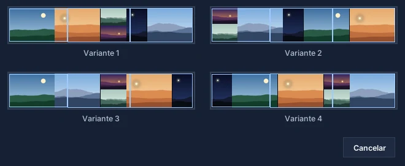
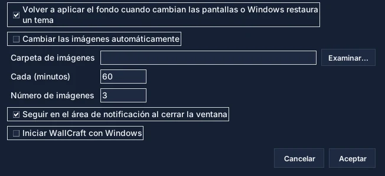

Añadir imágenes
Botón «Añadir imágenes» o arrastrar y soltar. Las fotos del teléfono se enderezan.
Todo lo necesario para componer un fondo en varias pantallas: la ventana, las herramientas, los ajustes y las soluciones a los problemas habituales.
Vaya directamente a la parte que le interesa.
Un primer fondo en dos minutos.
Botón «Añadir imágenes» o arrastrar y soltar. Las fotos del teléfono se enderezan.
Seis disposiciones, incluida la optimización máxima. Variantes… propone otras cuatro.
Ajustar conserva cada imagen entera; Rellenar cubre las pantallas recortando alrededor de las caras.
Mover, Escalar, Recortar, capas, rotación y retoques. Ctrl+Z deshace.
«Aplicar como fondo» corta la composición y la aplica pantalla por pantalla.
Cuatro zonas, de arriba abajo y de izquierda a derecha.
La barra de herramientas reúne lo que se usa siempre; el resto está en los menús Archivo, Imagen, Pantallas e Idioma.

Elija una en la lista Disposición y pulse Auto-organizar.
Divide el espacio en casillas de distintos tamaños. Con una imagen por pantalla, cada imagen va a su pantalla.
Filas de la misma altura en todo el ancho, como una galería de fotos.
Casillas idénticas, ideal para imágenes del mismo formato.
Una columna por imagen, práctica para retratos.
Una fila por imagen, para panorámicas.
Prueba miles de combinaciones y conserva la que menos espacio pierde. Recomendada.
Dos formas de colocar las imágenes en sus casillas.
Ajustar muestra cada imagen entera, sin deformarla: pueden quedar bandas vacías.
Rellenar cubre todo el espacio: cada imagen se recorta alrededor de las caras detectadas o de su zona más detallada.
Seleccione una imagen y elija una herramienta encima de la zona de trabajo.
Mover: arrastre la imagen; se ajusta a los bordes de la composición y de las demás imágenes (Mayús para desactivarlo).
Escalar: tire de una esquina, se conservan las proporciones.
Recortar: tire de los tiradores para elegir la parte visible de la imagen.
Otras cuatro combinaciones de la disposición elegida, una al lado de otra.
Pulse Variantes… y luego la miniatura que le guste: sustituye a la composición actual.

Lo que mostrará cada pantalla, antes de aplicar.
La pestaña Vista dibuja sus pantallas como en el escritorio, con su nombre: «Izquierda · Philips 23″», «Centro · iiyama 24,5″»…

Para que una línea quede recta entre pantallas de distintos tamaños.
Menú Pantallas › Tamaño real de las pantallas… Marque la casilla: WallCraft coloca las pantallas según su tamaño físico, leído de la pantalla (EDID).

WallCraft puede conservar su fondo y cambiarlo por usted.
Menú Pantallas › Fondo automático… WallCraft recuerda un fondo por configuración de pantallas (portátil solo, en su base…).

Los más útiles.
Los problemas más frecuentes.
Está ampliada más allá de su tamaño: el aviso «Baja resolución» lo indica. Use una imagen más grande, redúzcala o pase a Ajustar.
WallCraft aplica una imagen por pantalla; si Windows se niega, prueba el modo «Extender» y lo indica. Vuelva a detectar las pantallas (menú Pantallas) e inténtelo de nuevo.
Active el tamaño real de las pantallas y ajuste el espacio entre paneles.
Si el fondo automático está activo, WallCraft vuelve a aplicar el suyo en menos de un minuto. Si no, pulse Aplicar.
La composición se actualiza sola; WallCraft vuelve a aplicar el fondo guardado para esa configuración si existe.
WallCraft Pro 2026.11.13 alinea una imagen entre pantallas de distinto tamaño físico, rellena las pantallas recortando alrededor de las caras, mantiene el fondo al conectar un portátil y rota imágenes automáticamente.
Descubre cómo WallCraft Pro importa imágenes, las escala manualmente y previsualiza el resultado multi-monitor antes de aplicarlo.
Preguntas frecuentes sobre WallCraft Pro, el generador de fondos de pantalla para varios monitores.
Descarga la build actual, prueba tu disposición de monitores y deja el repositorio de GitHub a mano para actualizaciones y código fuente.